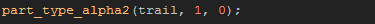

Tutorial
Page 7 of 12
Coding Simple Particles (I)
Right, so that's the built in particles covered and the D'n'D particles covered... but what baout coding particle effects? GameMaker:Studio has a number of advanced particle functions that can be used
to create amazing and beautiful effects, but they require a bit more work than the previously mentioned techniques.
To start learning the functions, lets re-make the first rocket firework that we made with the built-in particle effects. So, add a new object into the object resources and call it "obj_Simple_Firework".
We are now going to initialise a particle system, and create two particle types just as we did for the catherine wheel object, but this time in code. Let's start with the system itself which means that we need
a Create Event with a code box in it and the following line of code:
This code creates a particle system and assigns it's index value to the variable "Sname". Now, all further calls to do with that system must use this variable. Next we need to define our particles, and to keep things
easy, we'll do it line by line with a brief explanation for each function.
Create the particle type and assign it's index to a variable for all further functions.
Choose a particle shape for our new particle type from one of the available constants (see the manual for a full list). For our rocket firework we'll make it spark, rather than smoke, through the sky.
Set the particle scale. This is the base value that the particle is based on, where 1 is a s 1:1 scale. So, if you want your particle (before any size is changed) to be scaled by 2 along the x axis and by half along the
y axis, you would set the scale to 2, 0.5 for the x/y. in this case we will just leave it at 1:1.
The size of the particle, applied after scaling, and on both the x/y axis. Like the Drag'n'Drop actions, you specify a minimum and maximum range for the particle size and each particle will be set to a random size within
that range. Also like the D'n'D action, you can apply an increment to make the size grow (positive value), shrink (negative value) or remain constant (0), then after that we have one final value that is unique to
the particle functions... "wiggle".
"Wiggle" is a very curious property that adds an amount to the target function each step, but the change only lasts a step too, so the particle will appear to "jump" in size (or speed or direction). You can specify a
value from 0 - 20 for wiggle, and a random number will be generated from 0 to n each step and this will be added onto the final particle property. This is not necessary for our smoke particle so we'll leave it
as 0 for now.
There are actually three functions for color with particles (straight color, two color gradient, and three color gradient), but for this we will use the color2 function to create a gradient from one color to the other over
the lifetime of the particle from white to gray.

The same as with the color functions, there are also three alpha functions depending on what effect you wish (straight alpha, alpha change from a start alpha to an end alpha, and a three alpha fade over the
particle lifetime). Again, we will use the two alpha fade, with an alpha of 1 (opaque) at the start of the particle life to 0 (transparent) at the end.
The D'n'D action for motion is a mix of speed and direction, but the functions separate these into two different functions. This one sets the speed of the particle and is a range from a minimum to a maximum
and can be made to get faster or slower by changing the increment. it also has a "wiggle" which will be added to the base speed of each particle and as mentioned previously can be from 0 - 20. This particle
will have no wiggle, but we are going to make it slow down over time.
Direction is the other component of the D'n'D particle motion action that has it's own function, and in it you set a minimum and maximum direction as well as an increment and a wiggle. The increment will add
(or subtract) an amount to the current particle direction, giving nice swirling and curling effects. For our effect we want a random direction from 0º to 359º with no inrement or wiggle.
The rocket tail sparks should be affected by gravity, so we use this function to add a small amount pulling them down to earth.
The orientacion of the particle is the same as the "image angle" of a sprite, and gives the particle a rotational angle. For our effect a random value between 0º and 360º is fine.
This function controls blending. Up until now, we have not had any for of image blending with our particles as neither the built-in particle system, nor the D'n'D particle actions permit this. But what is blending?
Well, when this function is set to true the particles are blended using an additive blend mode, meaning that the light parts of the particle have their luminosity added to that of any other particles
that they may overlap when on the screen. It gives particles a "glow" effect whwn there are many of them and is very useful, but for out spark trail, we will leave it set to false.
This final function is the one that controls the lifetime of the particle and (as before) it is a random value from the given range, in this case all particles will last from between 8 and 30 steps on screen.
Excellent! We have our trail defined, so save the game and then continue to finish this firework and make it's button.
Click on the Next button to go to the next page of the tutorial.